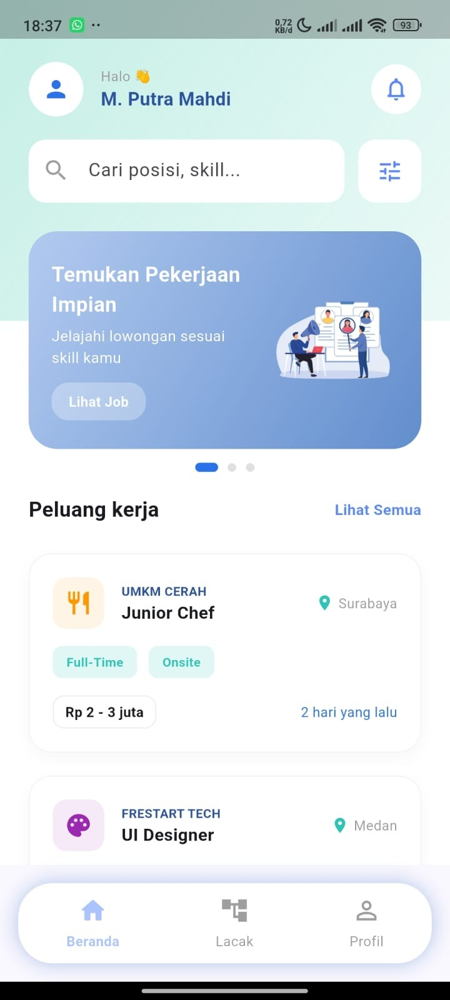
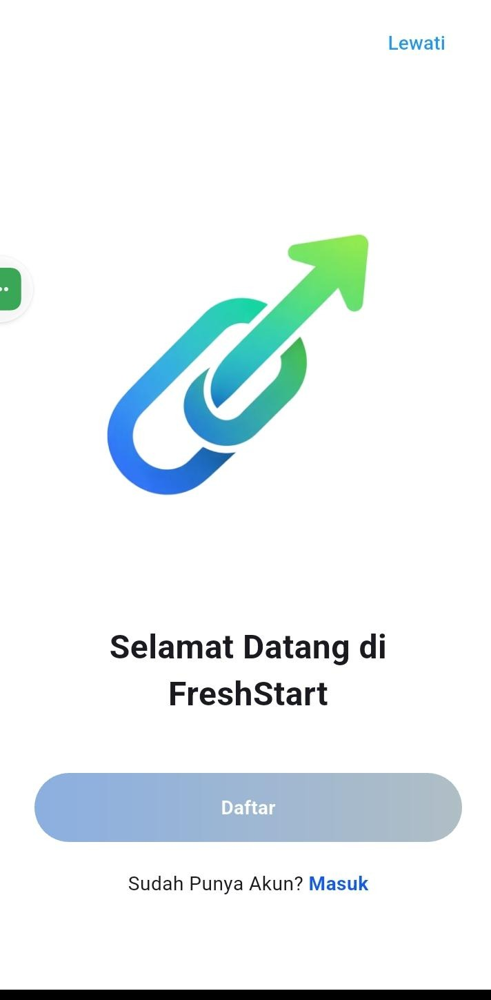
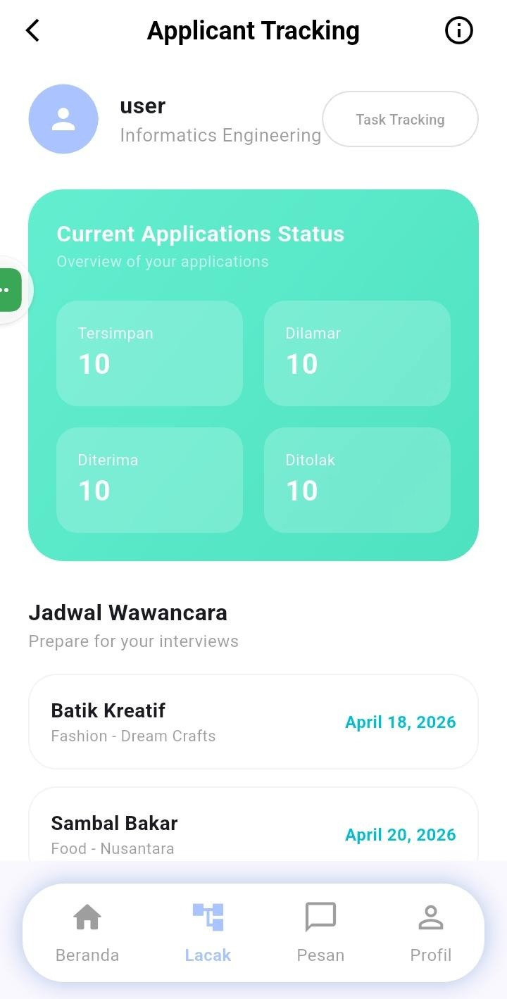
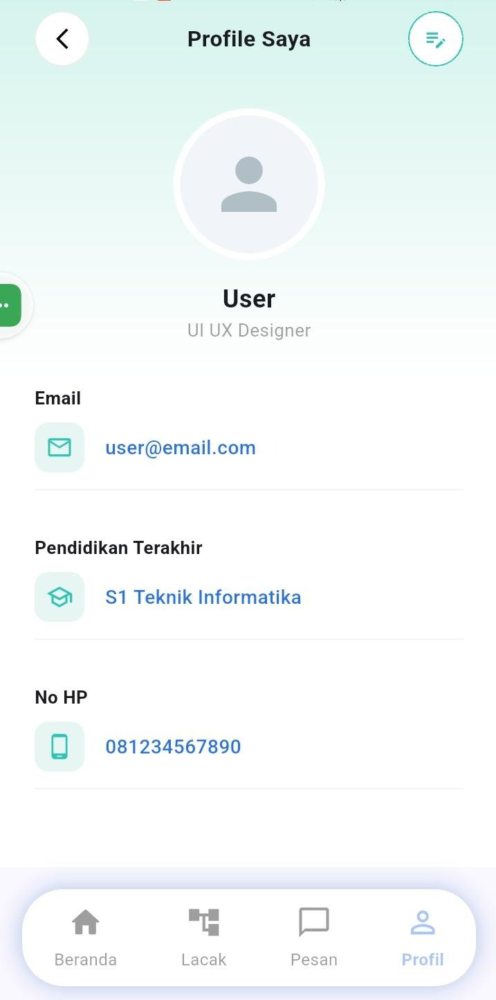

Saya adalah mahasiswa Teknik Informatika di Universitas Islam Sumatera Utara (UISU) yang memiliki ketertarikan di bidang Software Development, Mobile Development, dan UI/UX Design.
Sebagai peserta Infinite Learning, saya berperan sebagai Hacker Developer dalam project Massive Challenge Freshstart, sebuah solusi digital yang mendukung SDGs 8: Decent Work and Economic Growth.
Pengalaman ini memperkuat kemampuan saya dalam GitHub, debugging, dan problem solving.

Banyak UMKM kesulitan berkembang ke ranah digital karena keterbatasan biaya dan minimnya keahlian teknis. Sementara itu, banyak fresh graduate di bidang teknologi, desain, dan pemasaran kesulitan mendapatkan pekerjaan pertama akibat syarat pengalaman minimal 2 tahun.
Freshstart hadir sebagai aplikasi win-win solution yang menghubungkan kedua pihak ini. UMKM dapat memperoleh dukungan digital dengan biaya terjangkau, sedangkan talenta baru mendapatkan kesempatan pengalaman nyata melalui proyek-proyek digital.




